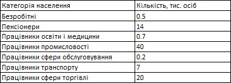
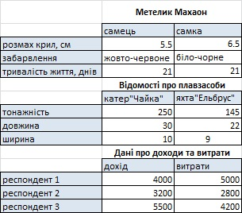
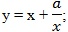
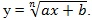

Завдання 1
Доберіть діаграму, найбільш прийнятну для відображення даних, наведених у табл. 4.2. Побудуйте та відформатуйте її, додайте назви та легенду.

Таблиця 4.2. Структура населення м. Щасливого щодо працевлаштування
Таблиця 4.2. Структура населення м. Щасливого щодо працевлаштування
Завдання 2
Які з наведених на рис. 4.34 наборів даних можна подати на діаграмах? Підберіть для цих наборів даних відповідні типи діаграм та побудуйте їх.

Рис. 4.34. Набори даних
Рис. 4.34. Набори даних
Завдання 3
Побудувати та підписати графік функції: y=xsinx на проміжку [-10; 10] з кроком 1.
Завдання 4
Знайти та записати корінь рівняння x4 + 2x3 - 3x2 + 2x - 1 = 0 на проміжку [-4; -3]. Використати метод – перетин двох графіків.
Завдання 5
Побудувати на проміжку [-2; 2] з кроком 0,5 графіки таких функцій (а, b, n - параметри):
- 
- 